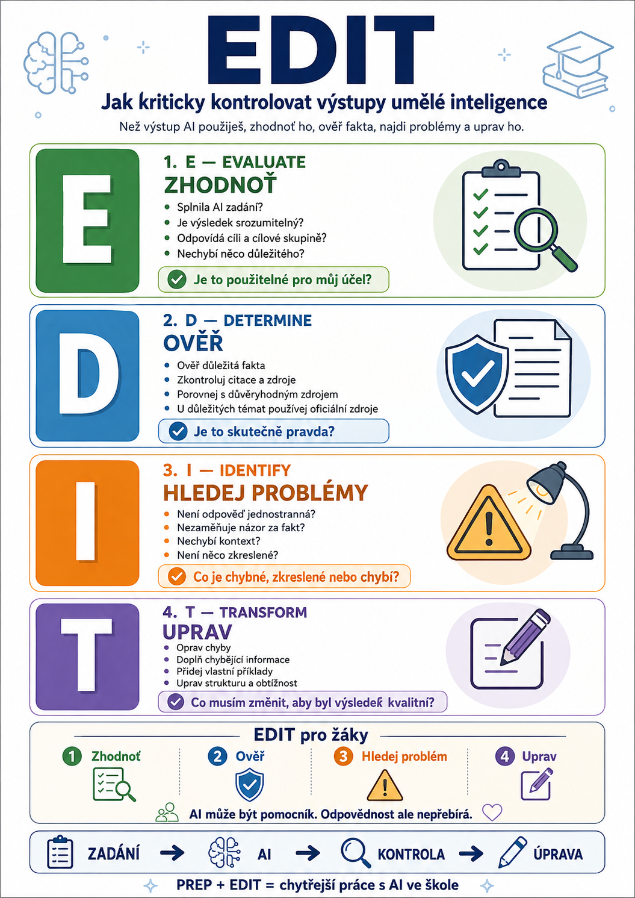

Umělá inteligence může během několika sekund vytvořit pracovní list, vysvětlit historickou událost, připravit test nebo napsat shrnutí odborného textu.
Je tu ale jeden problém:
AI může znít velmi přesvědčivě, i když se mýlí.
Dobře formulovaná odpověď ještě není zárukou správné odpovědi.
Metoda EDIT slouží ke kontrole toho, co AI vytvořila.
Pracuje se čtyřmi kroky:
- E – Evaluate
- D – Determine
- I – Identify
- T – Transform
Jednoduše řečeno:
Neber první odpověď AI jako hotový výsledek.
Podívej se na ni kriticky, ověř ji a teprve potom ji použij.

Co znamená EDIT?
E – EVALUATE
Zhodnoť výsledek
První otázka zní:
Odpovídá vůbec výsledek tomu, co jsem potřeboval/a?
Nemusíme zatím hledat každou faktickou chybu. Nejprve se podíváme na výstup jako celek.
Kontrolujeme například:
- splnila AI zadání?
- odpovídá výsledek cíli?
- je text srozumitelný?
- má vhodnou strukturu?
- odpovídá jazyk cílové skupině?
- není něco důležitého vynecháno?
- není naopak část textu zbytečná?
Pokud jsme například požádali:
Vysvětli princip transformátoru žákům prvního ročníku oboru elektrikář.
AI může vytvořit odborně působící odpověď.
První otázkou ale není:
Je každá věta technicky správně?
Nejprve bychom měli zkontrolovat:
Rozuměl by tomu vůbec žák prvního ročníku?
To je Evaluate.
D – DETERMINE
Ověř správnost
Teď přichází jedna z nejdůležitějších částí.
Ptáme se:
Je to, co AI tvrdí, skutečně pravda?
Generativní AI nevytahuje hotové odpovědi z nějaké univerzální encyklopedie pravdy. Vytváří odpověď na základě modelu a dostupného kontextu.
Proto může například:
- zaměnit datum,
- spojit dvě události,
- uvést špatnou definici,
- vytvořit neexistující citaci,
- připsat výrok nesprávnému člověku,
- použít zastaralé informace,
- sebevědomě doplnit něco, co ve zdroji vůbec není.
Proto bychom měli důležitá tvrzení porovnat s důvěryhodným zdrojem.
Může jít například o:
- učebnici,
- odbornou publikaci,
- právní předpis,
- oficiální web instituce,
- odborný článek,
- dokument poskytnutý učitelem,
- primární historický pramen.
„Ale AI mi napsala zdroj“
Ani to nestačí.
AI může vytvořit citaci, která vypadá dokonale:
Novák, J. (2024). Artificial Intelligence in Modern Education. Prague: Education Press.
Autor zní uvěřitelně.
Název také.
Nakladatelství také.
Jenže taková publikace vůbec nemusí existovat.
Proto platí velmi jednoduché pravidlo:
Zdroj není ověřený tím, že ho AI uvedla.
Zdroj je ověřený teprve tehdy, když jsme schopni zjistit, že skutečně existuje a podporuje dané tvrzení.
I – IDENTIFY
Hledej chyby, zkreslení a to, co chybí
Teď se podíváme na odpověď trochu jinak.
Neptáme se jen:
Je to pravda?
Ale také:
Jakým způsobem je problém prezentován?
AI může vytvářet odpovědi ovlivněné:
- stereotypy,
- jednostranným pohledem,
- kulturním kontextem,
- nevyváženými zdroji,
- chybějícími informacemi,
- nesprávnou interpretací otázky.
Můžeme si například položit otázky:
- Nezobrazuje odpověď problém pouze z jednoho pohledu?
- Nezaměňuje názor za fakt?
- Neobsahuje stereotyp?
- Nechybí důležitý kontext?
- Nezjednodušuje problém natolik, že mění jeho význam?
- Nejsou některé skupiny lidí zobrazovány stereotypně?
- Není odpověď ovlivněna tím, jak byla položena otázka?
Malý experiment
Zkuste se stejné AI zeptat:
Proč jsou sociální sítě škodlivé pro mladé lidi?
A potom:
Jaké výhody přinášejí sociální sítě mladým lidem?
Dostanete pravděpodobně dvě velmi rozdílné odpovědi.
Ani jedna přitom nemusí být vyloženě nesprávná.
Jen každá vychází z jinak formulovaného zadání.
A právě tady začíná kritická práce s AI.
T – TRANSFORM
Výsledek uprav
Poslední krok je zásadní.
Nejde jen najít chyby a říct:
AI to zase pokazila.
Smyslem je výsledek transformovat do podoby, kterou skutečně potřebujeme.
Můžeme například:
- opravit chybná fakta,
- doplnit chybějící informace,
- odstranit nevhodnou část,
- změnit úroveň obtížnosti,
- přepsat instrukce,
- přidat vlastní příklady,
- změnit strukturu,
- nahradit nevhodný příklad,
- doplnit ověřené zdroje.
Výsledkem tedy není:
ale spíše:
To je podstatný rozdíl.
EDIT v jedné tabulce
Zhodnotíme výsledek
Je to použitelné pro můj účel?
D – Determine
Ověříme fakta
Je to skutečně pravda?
I – Identify
Hledáme problémy
Co je zkreslené, chybné nebo chybí?
T – Transform
Výsledek upravíme
Co musím změnit, aby byl výsledek kvalitní?
Jak EDIT použije učitel?
Představme si, že AI připravila deset otázek do testu z občanské nauky.
Neměli bychom pouze text zkopírovat do testu.
Můžeme projít čtyři kroky.
E – Evaluate
Jsou otázky srozumitelné?
Odpovídají tématu?
Mají vhodnou obtížnost?
Testují to, co jsme skutečně učili?
D – Determine
Jsou správné odpovědi opravdu správné?
Jsou data, pojmy a definice přesné?
I – Identify
Neobsahují některé otázky nejednoznačnou formulaci?
Není více odpovědí správných?
Není v zadání skrytá nápověda?
Není otázka založena na něčem, co žáci nemohli znát?
T – Transform
Nevhodné otázky upravíme.
Některé odstraníme.
Jiné doplníme.
Změníme pořadí.
Doplníme vlastní příklady.
A teprve potom máme test připravený učitelem, nikoli „test vytvořený ChatGPT“.
EDIT je možná ještě důležitější pro žáky
Právě tady má metoda velmi zajímavé využití.
Místo jednoduchého pravidla:
AI při práci nepoužívejte.
můžeme v některých vhodných úlohách požadovat:
AI použít můžete, ale její výsledek musíte projít metodou EDIT.
Žák tak nemá za úkol pouze něco vygenerovat.
Musí výsledek také:
To už je úplně jiná vzdělávací aktivita.
UNESCO ve svém rámci AI kompetencí pro žáky zdůrazňuje právě schopnost AI systémy kriticky posuzovat a připravovat žáky na roli odpovědných uživatelů a spolutvůrců technologií.
Aktivita do výuky: Najdi chybu AI
Jedna z nejjednodušších možností použití EDIT ve třídě.
Zadání
Učitel nechá AI vytvořit krátký text k probíranému tématu.
Do textu mohou být záměrně nebo přirozeně zahrnuty problematické informace.
Žáci dostanou úkol:
E – Evaluate
Zhodnoťte odpověď.
Je srozumitelná?
Odpovídá zadání?
D – Determine
Ověřte alespoň tři tvrzení pomocí důvěryhodných zdrojů.
I – Identify
Najděte:
- nepřesnosti,
- zavádějící tvrzení,
- chybějící informace,
- případná zkreslení.
T – Transform
Přepište odpověď tak, aby byla přesnější a kvalitnější.
Najednou se z AI nestává stroj na domácí úkoly.
Stává se materiálem pro kritickou analýzu.
Aktivita: AI versus učebnice
Další jednoduchá možnost.
Žáci položí AI otázku k aktuálnímu učivu.
Například:
Vysvětli příčiny první světové války.
Potom porovnají odpověď s:
- učebnicí,
- materiálem učitele,
- dalším ověřeným zdrojem.
Jejich úkolem není rozhodnout:
Kdo vyhrál – AI, nebo učebnice?
Mají zjistit:
- co uvedly oba zdroje,
- co AI vynechala,
- co formulovala jinak,
- zda přidala něco navíc,
- zda se objevila chyba.
To je praktická informační gramotnost.
Aktivita: Dvě AI, dvě odpovědi
Zajímavé může být také položit stejnou otázku dvěma různým AI systémům.
Například ChatGPT a Gemini.
Potom žáci porovnají:
- fakta,
- argumenty,
- strukturu,
- styl,
- zdroje,
- rozdíly mezi odpověďmi.
Důležitá otázka potom zní:
Když se dvě AI neshodnou, jak zjistíme, která odpověď je správná?
Odpověď samozřejmě není:
Zeptáme se třetí AI. 😄
Musíme se vrátit ke zdrojům.
EDIT jako jednoduchý žákovský checklist
Pro běžnou práci nemusíme používat anglické názvy.
Žákům můžeme EDIT přeložit například takto:
1. ZHODNOŤ
Rozumím odpovědi?
Odpovídá otázce?
2. OVĚŘ
Která tvrzení jsou fakta?
Dokážu je ověřit?
3. HLEDEJ PROBLÉM
Co může být chybné?
Co chybí?
Je odpověď jednostranná?
4. UPRAV
Co musím změnit, aby byl výsledek lepší?
Tohle už si lze vytisknout jako malou kartičku vedle počítače.
Učitel zůstává rozhodující
Stejný princip platí při používání AI učitelem.
AI může:
- navrhnout,
- doporučit,
- vytvořit první verzi,
- přeformulovat,
- hledat možnosti.
Ale učitel musí rozhodnout:
Je tento materiál skutečně vhodný pro moje žáky?
To je obzvlášť důležité u:
- hodnocení žáků,
- doporučení týkajících se žáků,
- citlivých témat,
- osobních údajů,
- speciálních vzdělávacích potřeb,
- rozhodnutí s významnými důsledky.
AI může být pomocník.
Odpovědnost ale nepřebírá.
EDIT neznamená nedůvěřovat všemu
Smyslem není vytvořit z učitele nebo žáka detektiva, který předpokládá, že každá věta AI je podvod.
Stejně tak ale není rozumné předpokládat:
Když to napsala moderní AI, bude to určitě správně.
Lepší přístup je:
Důvěřuj přiměřeně důležitosti informace.
Potřebuji deset nápadů na warm-up do hodiny?
Není nutné provádět akademické ověřování každého nápadu.
Potřebuji aktuální informace o legislativě?
Tady už bych bez ověření primárního zdroje AI nevěřila.
Čím důležitější je rozhodnutí, tím důkladnější by měla být kontrola.
PREP + EDIT
Teď už máme dvě poloviny systému.
PREP
Pomáhá vytvořit dobré zadání.
EDIT
Pomáhá zkontrolovat odpověď.
Dohromady vzniká jednoduchý pracovní cyklus:
A pokud výsledek stále není dobrý?
Zadání můžeme zpřesnit a celý postup zopakovat.
Co bychom měli naučit žáky?
Možná vůbec nejdůležitější lekce o AI není:
Jak napsat nejlepší prompt?
Mnohem důležitější je:
Jak poznat, jestli můžu výsledku věřit.
Promptování se bude měnit.
AI modely budou stále schopnější.
Rozhraní aplikací se budou měnit.
Některé dnešní nástroje za několik let možná ani nebudou existovat.
Ale schopnosti:
budou důležité pořád.
EDIT v jedné větě
Pokud si nechceme pamatovat celou zkratku, stačí toto:
Co následuje?
PREP nám ukázal, jak AI správně zadat práci.
EDIT ukázal, jak její výsledek kriticky zkontrolovat.
V dalším článku oba principy spojíme a posuneme o krok dál.
Vytvoříme praktický workflow pro současnou školu:
Tedy postup, který lze použít při přípravě pracovních listů, prezentací, testů, výkladových materiálů i dalších výstupů vytvořených s pomocí generativní AI.